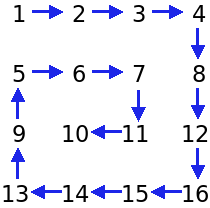

In what concerns the continuous evaluation solving exercises grade during the semester, you should submit until 23:59 of
(this exercise will still be available for submission after that deadline, but without counting towards your grade)
[to understand the context of this problem, you should read the class #05 exercise sheet]
In this problem you should submit a function as described. Inside the function do not print anything that was not asked!
The name of the .py source file you submit to Mooshak should NOT start with a digit (you will get an error if you submit it like that).
Homer Simpson, ever the lover of donuts and comfort, finds himself in an unusual situation at work. Mr. Burns, inspired by one of his bizarre ideas, has ordered Homer to organize the Springfield Nuclear Power Plant's inventory data in a "spiral path". Homer has no clue what that means, but he does know one thing: if he doesn’t figure it out, there might be trouble (and no donuts for a week!).
Homer takes a deep breath, scratching his head as he looks at the matrix of numbers in front of him. He realizes he's staring at a grid of items that need to be inspected in a specific order. Normally, he'd go row by row or column by column, but Mr. Burns wants it arranged in a spiral, starting from the top left and winding inward like a donut shape. Homer isn’t thrilled with the task, but the thought of a perfectly spiraled donut gives him some motivation to dive in.
Write a function spiral_path(m) that receives a rectangular matrix m given as a list of lists with r rows and c columns, and returns a list with the elements of the matrix in the order they are traversed as a spiral, starting from the top left. The image below explains the spiral (donut) path for the first example input:

The following limits are guaranteed in all the test cases that will be given to your program:
| 1 ≤ r, c ≤ 100 | Number of rows and columns |
Example Function Calls
print(spiral_path([[ 1, 2, 3, 4],
[ 5, 6, 7, 8],
[ 9, 10,11,12],
[13,14, 15,16]]))
print(spiral_path([[ 1, 2, 3, 4, 5, 6],
[ 7, 8, 9,10,11,12],
[13,14,15,16,17,18]]))
Example Output
[1, 2, 3, 4, 8, 12, 16, 15, 14, 13, 9, 5, 6, 7, 11, 10] [1, 2, 3, 4, 5, 6, 12, 18, 17, 16, 15, 14, 13, 7, 8, 9, 10, 11]
(there are no empty lines printed; the example output is spaced just so that you can better understand it)